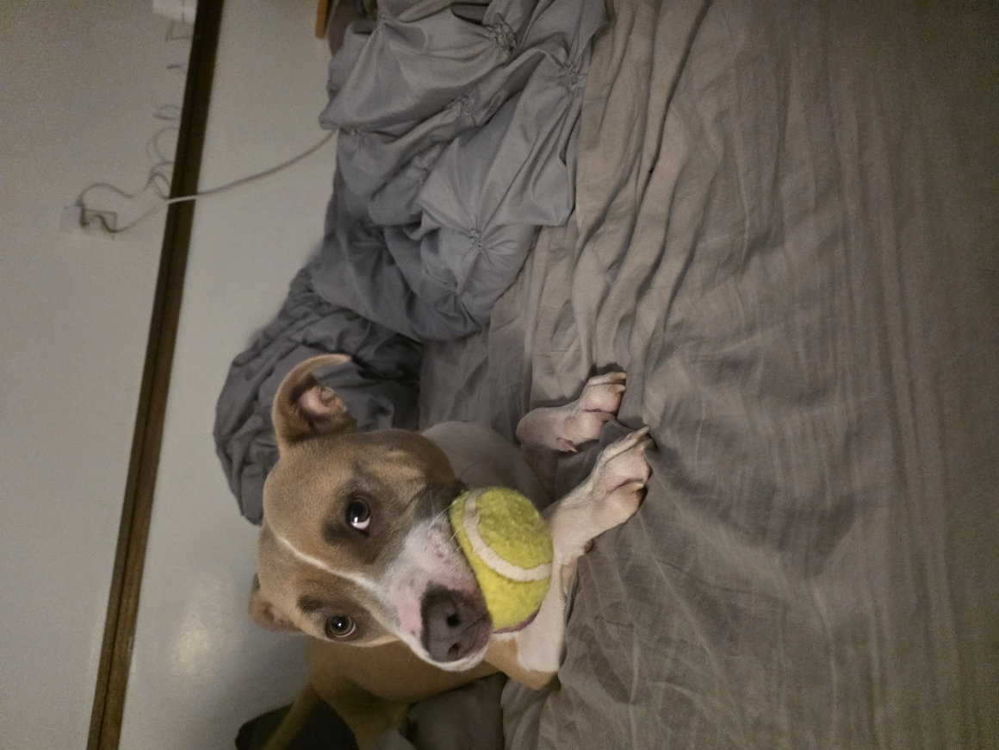

-Leo-

Leo is an 11 year old chihuahua mix. He may be small but he is mighty! And grumpy haha. He is very protective of his loved ones. Loves women and children,
but can be selective on men. He is a snuggle bug and loves to nap, you can find him most of the day underneath a blanket. He is an old man but that
doesn't stop him from anything, he loves to play with his little big brother Lanto an American Staffordshire mix whose a lot bigger then he is. He can be vocal but it's the little dog syndrome in him.
He's one of the best boys out there and is one of my soul dogs. Very fortunate to have gotten him and experience 11 and counting years to come.
-Lanto-

The youngest of the bunch. Lots of energy, but the sweetest boy ever. He just turned 1yr this past halloween. He loves to play with his big little brother Leo and older sister Luna. You can often
find him by the kitchen looking for scraps and food or chasing his older sister Luna around. He loves all the attention and kisses, will get jealous if he see's his older brother getting affection from mom.
He's also a protective dog but loves everyone and everything and often gets VERY excited and can't contain it, but we're still working on it. He may be bigger then his big little brother Leo, but Leo runs the house.
His name is unique and comes from an African language meaning Light, because he was my light when the world got a little dark for me. My other soul dog.
-Luna-

The babygirl of the 3 and the only girl. She may look like a cat, but she was raised by dogs, Leo to be exact. She's very petite and small, very gentle and cute. She's my little miss independent, for the most part
I just have to make sure she has food and water in her bowl and we're okay. But the moment there isn't anything in the bowls you can guarantee she will let me know to fill it back up. Luna is a very smart cat, she knows
her name and will come when called. She is very affectionate and wants all the pets in the world. She's the sweetest and loves her older brother leo very much and looks up to him, Lanto on the other hand bothers her and chases her around all the time.
She's my soul kitty, she completes the pack.